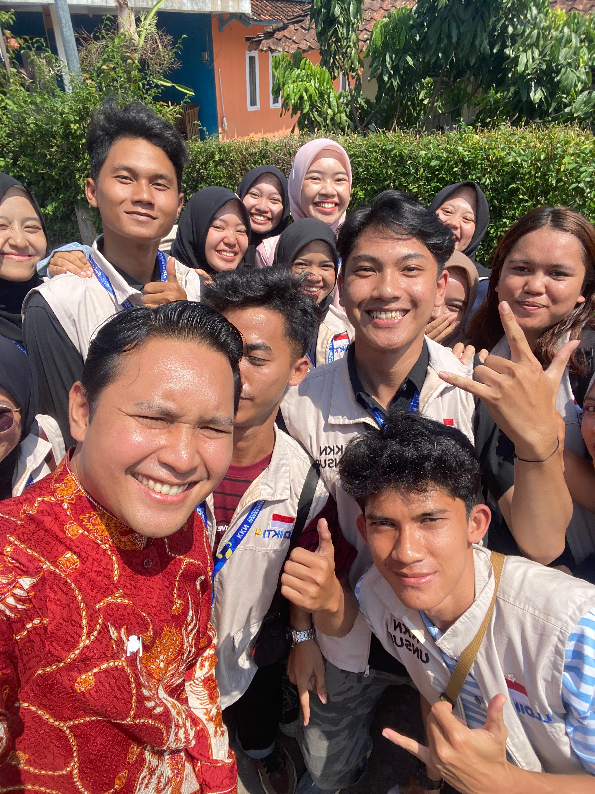

PENINJAUAN BUPATI UNTUK PERBAIKAN JALAN DAN SEKOLAH
CIANJUR - Bupati Cianjur, Bapak Wahyu Ferdian, bersama Camat Cibeber, Bapak Indra Sunggara, dan didampingi oleh Kepala Desa Sukamaju, Bapak Hendri, melaksanakan kunjungan kerja pada hari Kamis, 31 Juli 2025. Agenda utama kunjungan ini adalah untuk meninjau secara langsung dan menindaklanjuti progres perbaikan infrastruktur jalan serta kondisi fasilitas pendidikan di SDN Pasir Munding 2, Desa Sukamaju, Kecamatan Cibeber.
Kunjungan ini merupakan respons cepat dan bentuk kepedulian Pemerintah Kabupaten Cianjur terhadap aspirasi masyarakat terkait pentingnya akses jalan yang layak dan lingkungan belajar yang aman serta nyaman bagi para siswa.
Dalam peninjauannya, Bupati Cianjur berdialog dengan jajaran tenaga pengajar dan komite sekolah di SDN Pasir Munding 2 untuk mendengar langsung kendala yang dihadapi serta kebutuhan mendesak yang diperlukan. Beliau menekankan bahwa peningkatan kualitas sarana dan prasarana pendidikan adalah prioritas utama untuk mencetak generasi penerus yang unggul.
Selain meninjau kondisi bangunan sekolah, rombongan juga memeriksa titik-titik ruas jalan menuju sekolah yang sedang dan akan diperbaiki. Akses jalan yang baik dinilai krusial tidak hanya untuk kelancaran aktivitas belajar-mengajar, tetapi juga untuk menunjang kegiatan perekonomian warga sekitar.
Kepala Desa Sukamaju menyambut baik dan mengapresiasi kehadiran langsung Bupati dan Camat. "Kami mewakili warga Desa Sukamaju, khususnya keluarga besar SDN Pasir Munding 2, mengucapkan terima kasih atas perhatian dan tindak lanjut yang diberikan. Ini adalah bukti bahwa pemerintah hadir dan mendengar kebutuhan kami," ujarnya.
Kunjungan ini diharapkan dapat mempercepat realisasi perbaikan yang telah direncanakan, sehingga manfaatnya dapat segera dirasakan oleh para siswa, guru, dan seluruh masyarakat di Desa Sukamaju.